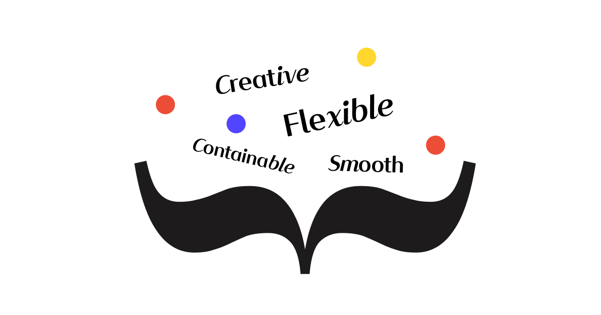
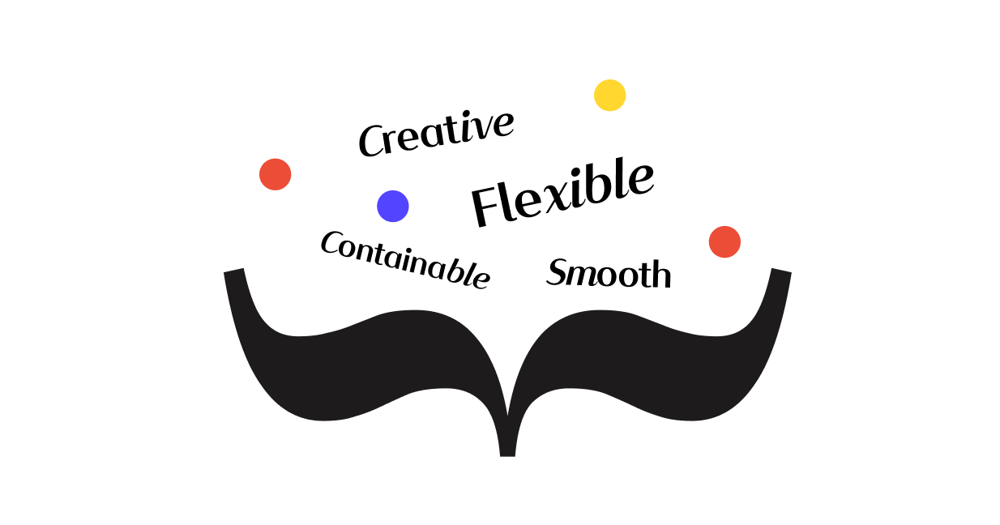

Whole project overview
프로그래밍을 처음 배우면서 느꼈던 어려움들은 주로 프로젝트를 진행하면서 해답을 찾아갔습니다. 다른 시각으로 오류를 찾고 시도해 보지 못한 언어로 방법을 찾아나가면서 공부를 할 수 있었습니다. 해당 페이지에서 사용한 코드 기술과 경험했던 어려움, 응용력 등을 기록해보았습니다.
프로그래밍을 처음 배우면서 느꼈던 어려움들은 주로 프로젝트를 진행하면서 해답을 찾아갔습니다. 다른 시각으로 오류를 찾고 시도해 보지 못한 언어로 방법을 찾아나가면서 공부를 할 수 있었습니다. 해당 페이지에서 사용한 코드 기술과 경험했던 어려움, 응용력 등을 기록해보았습니다.
건강한 음주 습관을 형성하도록 도와주는 서비스 <알픽>을 소개하는 웹사이트입니다.
혼술, 홈술이 늘어나면서 알콜 의존증과 같은 문제에 집중하여 기획한 프로젝트입니다.
학교를 다니며 팀으로 할 수 있는 마지막 프로젝트였기에 프로젝트의 기획부터 많은 참여를
기울인 작품입니다. 페르소나를 작성하고 경쟁사를 조사하며 기획 단계에 기여하였습니다.
해당 웹사이트는 기획부터 디자인, 서비스를 소개하는 원스크롤 웹페이지 입니다.
더보기 >
국제 커뮤니케이션 디자인 공모전에 출품하였던 웹사이트입니다.
비플은 비건 플래너의 약자로, 비건 생활에 도움을 주는 비거니즘 투두리스트 서비스입니다.
전체 기획 단계에 참여한 프로젝트로, 다양해지고 있는 라이프 스타일과
비거노믹스 시장의 발전에 집중하여 기획하게 되었습니다. 디자인 부분에서도
많은 소통을 거치며 완성된 서비스입니다.
해당 웹페이지는 FullPage 라이브러리를 사용한 비플 서비스의 소개 웹페이지입니다.
더보기 >
 

2학년 1학기, 자바스크립트 강의를 수강하는 동안 배웠던 기초적인
문법과 이를 활용한 기능들을 토대로 만든 웹사이트입니다.
웹페이지의 기획부터 디자인 모두 직접 설정하였습니다.
Vanilla.js를 이용한 메뉴와 CSS의 미디어 쿼리를 이용한 반응형을 구현하였으며,
slick 라이브러리를 처음 사용하며 라이브러리의 활용에 익숙해졌습니다.
더보기 >